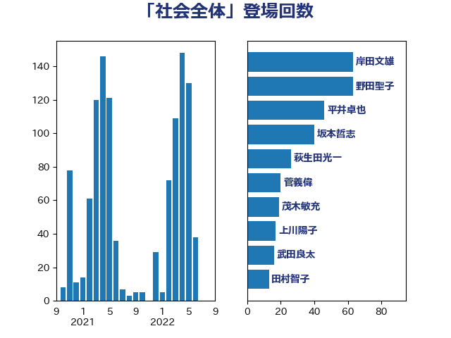

単語「社会全体」

| 岸田文雄 | 自由民主党 | 63 回 |
| 野田聖子 | 自由民主党 | 63 回 |
| 平井卓也 | 自由民主党 | 46 回 |
| 坂本哲志 | 自由民主党 | 40 回 |
| 萩生田光一 | 自由民主党 | 26 回 |
| 菅義偉 | 自由民主党 | 20 回 |
| 茂木敏充 | 自由民主党 | 19 回 |
| 上川陽子 | 自由民主党 | 17 回 |
| 武田良太 | 自由民主党 | 16 回 |
| 田村智子 | 日本共産党 | 13 回 |
| 古賀友一郎 | 自由民主党 | 12 回 |
| 小泉進次郎 | 自由民主党 | 12 回 |
| 金子恭之 | 自由民主党 | 12 回 |
| 古川禎久 | 自由民主党 | 11 回 |
| 宮本徹 | 日本共産党 | 10 回 |
| 末松信介 | 自由民主党 | 10 回 |
| 牧島かれん | 自由民主党 | 10 回 |
| 塩川鉄也 | 日本共産党 | 9 回 |
| 矢倉克夫 | 公明党 | 9 回 |
| 小林鷹之 | 自由民主党 | 8 回 |
| 柴田巧 | 日本維新の会 | 8 回 |
| 大西健介 | 立憲民主党 | 7 回 |
| 山下芳生 | 日本共産党 | 7 回 |
| 山際大志郎 | 自由民主党 | 7 回 |
| 下野六太 | 公明党 | 6 回 |
| 加藤勝信 | 自由民主党 | 6 回 |
| 古屋範子 | 公明党 | 6 回 |
| 堤かなめ | 立憲民主党 | 6 回 |
| 小沼巧 | 立憲民主党 | 6 回 |
| 後藤茂之 | 自由民主党 | 6 回 |
| 杉尾秀哉 | 立憲民主党 | 6 回 |
| 梶山弘志 | 自由民主党 | 6 回 |
| 若宮健嗣 | 自由民主党 | 6 回 |
| 藤田文武 | 日本維新の会 | 6 回 |
| 中谷一馬 | 立憲民主党 | 5 回 |
| 中野洋昌 | 公明党 | 5 回 |
| 丸川珠代 | 自由民主党 | 5 回 |
| 嘉田由紀子 | 無所属 | 5 回 |
| 山口壯 | 自由民主党 | 5 回 |
| 橋本聖子 | 無所属 | 5 回 |
| 河野太郎 | 自由民主党 | 5 回 |
| 田村憲久 | 自由民主党 | 5 回 |
| 石川博崇 | 公明党 | 5 回 |
| 藤井比早之 | 自由民主党 | 5 回 |
| 西村康稔 | 自由民主党 | 5 回 |
| 城井崇 | 立憲民主党 | 4 回 |
| 安江伸夫 | 公明党 | 4 回 |
| 東徹 | 日本維新の会 | 4 回 |
| 武見敬三 | 自由民主党 | 4 回 |
| 浜口誠 | 国民民主党 | 4 回 |
| 竹谷とし子 | 公明党 | 4 回 |
| 逢坂誠二 | 立憲民主党 | 4 回 |
| 野上浩太郎 | 自由民主党 | 4 回 |
| 音喜多駿 | 日本維新の会 | 4 回 |
| 高木かおり | 日本維新の会 | 4 回 |
| 吉川沙織 | 立憲民主党 | 3 回 |
| 吉田統彦 | 立憲民主党 | 3 回 |
| 塩田博昭 | 公明党 | 3 回 |
| 小川淳也 | 立憲民主党 | 3 回 |
| 山添拓 | 日本共産党 | 3 回 |
| 岩田和親 | 自由民主党 | 3 回 |
| 平木大作 | 公明党 | 3 回 |
| 木原稔 | 自由民主党 | 3 回 |
| 杉久武 | 公明党 | 3 回 |
| 枝野幸男 | 立憲民主党 | 3 回 |
| 横沢高徳 | 立憲民主党 | 3 回 |
| 渡辺孝一 | 自由民主党 | 3 回 |
| 神田憲次 | 自由民主党 | 3 回 |
| 福田達夫 | 自由民主党 | 3 回 |
| 竹内真二 | 公明党 | 3 回 |
| 竹内譲 | 公明党 | 3 回 |
| 自見はなこ | 自由民主党 | 3 回 |
| 酒井庸行 | 自由民主党 | 3 回 |
| 金子恵美 | 立憲民主党 | 3 回 |
| 金村龍那 | 日本維新の会 | 3 回 |
| 馬場雄基 | 立憲民主党 | 3 回 |
| 高木啓 | 自由民主党 | 3 回 |
| 高野光二郎 | 自由民主党 | 3 回 |
| 高階恵美子 | 自由民主党 | 3 回 |
| こやり隆史 | 自由民主党 | 2 回 |
| 上野賢一郎 | 自由民主党 | 2 回 |
| 下村博文 | 自由民主党 | 2 回 |
| 中司宏 | 日本維新の会 | 2 回 |
| 中西祐介 | 自由民主党 | 2 回 |
| 井坂信彦 | 立憲民主党 | 2 回 |
| 勝目康 | 自由民主党 | 2 回 |
| 吉田宣弘 | 公明党 | 2 回 |
| 和田政宗 | 自由民主党 | 2 回 |
| 堂故茂 | 自由民主党 | 2 回 |
| 大島敦 | 立憲民主党 | 2 回 |
| 大石あきこ | れいわ新選組 | 2 回 |
| 太田房江 | 自由民主党 | 2 回 |
| 室井邦彦 | 日本維新の会 | 2 回 |
| 宮崎政久 | 自由民主党 | 2 回 |
| 宮崎雅夫 | 自由民主党 | 2 回 |
| 山本博司 | 公明党 | 2 回 |
| 岡本あき子 | 立憲民主党 | 2 回 |
| 岸信夫 | 自由民主党 | 2 回 |
| 岸真紀子 | 立憲民主党 | 2 回 |
| 平山佐知子 | 無所属 | 2 回 |
| 打越さく良 | 立憲民主党 | 2 回 |
| 斉藤鉄夫 | 公明党 | 2 回 |
| 本田顕子 | 自由民主党 | 2 回 |
| 杉田水脈 | 自由民主党 | 2 回 |
| 松本尚 | 自由民主党 | 2 回 |
| 林芳正 | 自由民主党 | 2 回 |
| 森山浩行 | 立憲民主党 | 2 回 |
| 江田憲司 | 立憲民主党 | 2 回 |
| 泉健太 | 立憲民主党 | 2 回 |
| 片山さつき | 自由民主党 | 2 回 |
| 片山大介 | 日本維新の会 | 2 回 |
| 田名部匡代 | 立憲民主党 | 2 回 |
| 田畑裕明 | 自由民主党 | 2 回 |
| 石橋通宏 | 立憲民主党 | 2 回 |
| 福山哲郎 | 立憲民主党 | 2 回 |
| 進藤金日子 | 自由民主党 | 2 回 |
| 鈴木貴子 | 自由民主党 | 2 回 |
| 長谷川岳 | 自由民主党 | 2 回 |
| 阿部司 | 日本維新の会 | 2 回 |
| おおつき紅葉 | 立憲民主党 | 1 回 |
| 丹羽秀樹 | 自由民主党 | 1 回 |
| 二階俊博 | 自由民主党 | 1 回 |
| 井上信治 | 自由民主党 | 1 回 |
| 伊佐進一 | 公明党 | 1 回 |
| 伊藤孝恵 | 国民民主党 | 1 回 |
| 伊藤孝江 | 公明党 | 1 回 |
| 伴野豊 | 立憲民主党 | 1 回 |
| 住吉寛紀 | 日本維新の会 | 1 回 |
| 佐々木さやか | 公明党 | 1 回 |
| 務台俊介 | 自由民主党 | 1 回 |
| 古川俊治 | 自由民主党 | 1 回 |
| 吉田とも代 | 日本維新の会 | 1 回 |
| 吉良よし子 | 日本共産党 | 1 回 |
| 吉良州司 | 無所属 | 1 回 |
| 國場幸之助 | 自由民主党 | 1 回 |
| 國重徹 | 公明党 | 1 回 |
| 土屋品子 | 自由民主党 | 1 回 |
| 塩崎彰久 | 自由民主党 | 1 回 |
| 大岡敏孝 | 自由民主党 | 1 回 |
| 大野敬太郎 | 自由民主党 | 1 回 |
| 大野泰正 | 自由民主党 | 1 回 |
| 守島正 | 日本維新の会 | 1 回 |
| 宮本周司 | 自由民主党 | 1 回 |
| 宮路拓馬 | 自由民主党 | 1 回 |
| 小宮山泰子 | 立憲民主党 | 1 回 |
| 小山展弘 | 立憲民主党 | 1 回 |
| 小沢雅仁 | 立憲民主党 | 1 回 |
| 小西洋之 | 立憲民主党 | 1 回 |
| 小野泰輔 | 日本維新の会 | 1 回 |
| 山井和則 | 立憲民主党 | 1 回 |
| 山口那津男 | 公明党 | 1 回 |
| 山岸一生 | 立憲民主党 | 1 回 |
| 山本左近 | 自由民主党 | 1 回 |
| 山本香苗 | 公明党 | 1 回 |
| 山田太郎 | 自由民主党 | 1 回 |
| 岩渕友 | 日本共産党 | 1 回 |
| 岬麻紀 | 日本維新の会 | 1 回 |
| 川合孝典 | 国民民主党 | 1 回 |
| 川田龍平 | 立憲民主党 | 1 回 |
| 平将明 | 自由民主党 | 1 回 |
| 平林晃 | 公明党 | 1 回 |
| 平沼正二郎 | 自由民主党 | 1 回 |
| 後藤田正純 | 自由民主党 | 1 回 |
| 後藤祐一 | 立憲民主党 | 1 回 |
| 木原誠二 | 自由民主党 | 1 回 |
| 本庄知史 | 立憲民主党 | 1 回 |
| 本村伸子 | 日本共産党 | 1 回 |
| 本田太郎 | 自由民主党 | 1 回 |
| 松下新平 | 自由民主党 | 1 回 |
| 松野博一 | 自由民主党 | 1 回 |
| 柳本顕 | 自由民主党 | 1 回 |
| 梅村聡 | 日本維新の会 | 1 回 |
| 森屋隆 | 立憲民主党 | 1 回 |
| 森田俊和 | 立憲民主党 | 1 回 |
| 江島潔 | 自由民主党 | 1 回 |
| 池田佳隆 | 自由民主党 | 1 回 |
| 沢田良 | 日本維新の会 | 1 回 |
| 河西宏一 | 公明党 | 1 回 |
| 津島淳 | 自由民主党 | 1 回 |
| 浅野哲 | 国民民主党 | 1 回 |
| 浮島智子 | 公明党 | 1 回 |
| 渡辺創 | 立憲民主党 | 1 回 |
| 渡辺猛之 | 自由民主党 | 1 回 |
| 湯原俊二 | 立憲民主党 | 1 回 |
| 滝沢求 | 自由民主党 | 1 回 |
| 熊田裕通 | 自由民主党 | 1 回 |
| 玄葉光一郎 | 立憲民主党 | 1 回 |
| 田中健 | 国民民主党 | 1 回 |
| 田村まみ | 国民民主党 | 1 回 |
| 石井準一 | 自由民主党 | 1 回 |
| 石川大我 | 立憲民主党 | 1 回 |
| 石橋林太郎 | 自由民主党 | 1 回 |
| 礒崎哲史 | 国民民主党 | 1 回 |
| 神田潤一 | 自由民主党 | 1 回 |
| 福島みずほ | 社会民主党 | 1 回 |
| 福重隆浩 | 公明党 | 1 回 |
| 笹川博義 | 自由民主党 | 1 回 |
| 篠原豪 | 立憲民主党 | 1 回 |
| 緒方林太郎 | 無所属 | 1 回 |
| 若松謙維 | 公明党 | 1 回 |
| 荒井優 | 立憲民主党 | 1 回 |
| 藤巻健太 | 日本維新の会 | 1 回 |
| 谷合正明 | 公明党 | 1 回 |
| 赤木正幸 | 日本維新の会 | 1 回 |
| 赤池誠章 | 自由民主党 | 1 回 |
| 赤羽一嘉 | 公明党 | 1 回 |
| 道下大樹 | 立憲民主党 | 1 回 |
| 里見隆治 | 公明党 | 1 回 |
| 鈴木俊一 | 自由民主党 | 1 回 |
| 鈴木庸介 | 立憲民主党 | 1 回 |
| 階猛 | 立憲民主党 | 1 回 |
| 青山周平 | 自由民主党 | 1 回 |
| 青山大人 | 立憲民主党 | 1 回 |
| 須藤元気 | 無所属 | 1 回 |
| 馬場伸幸 | 日本維新の会 | 1 回 |
| 高橋はるみ | 自由民主党 | 1 回 |
| 高良鉄美 | 無所属 | 1 回 |
| 鰐淵洋子 | 公明党 | 1 回 |
| 麻生太郎 | 自由民主党 | 1 回 |